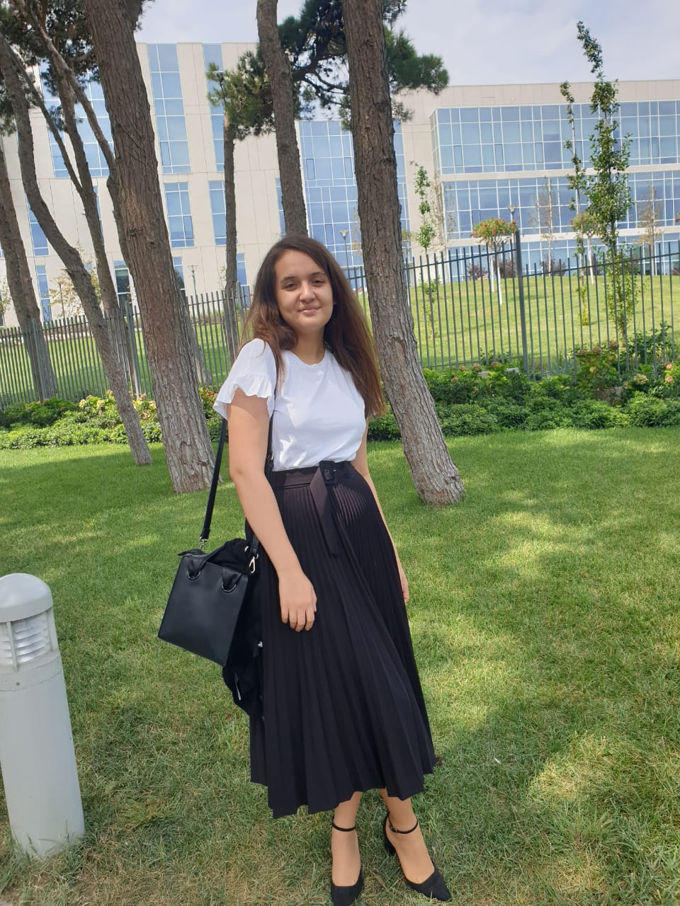
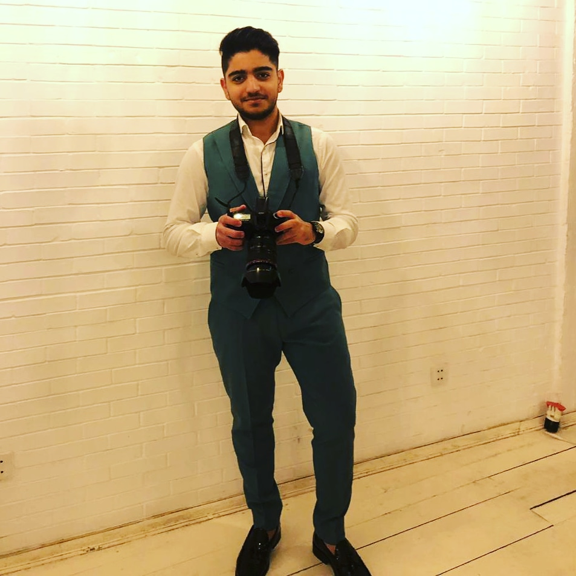

О нас
“Часто бывает трудно отличить тяжелые жизненные удары от ударов возможностей.”
(Фредерик Филлипс)
КТО МЫ?
Надеемся, вам понравился наш сайт, и мы будем рады видеть вас снова.
Хотим проинформировать вас об основателях нашего сайта. Наш сайт создан
в результате совместной работы 4 молодых студентов, обмена информацией,
идеями и мнениями. Создатели сайта сначала прошли трехступенчатый курс
и наконец создали сайт, который мы используем. Как я уже упоминал ранее,
основателем сайта являются 4 студента, и нам приятно поделиться с вами
информацией о них.
Лейла Гулиева
Лейла Гулиева, родилась 26 июля 2002 года, является одним из
основателей этого сайта и в настоящее время изучает информатику
в Университете ADA. Она обменялась мнениями со своими однокурсниками
и стала одним из любимых создателей этого сайта. Она собрала его
в разделе «Час кода» нашего сайта. Что касается школьной жизни,
то Лейла закончила школу № 82 с красным аттестатом до 10 класса и
окончила Бакинский турецкий лицей Фонда солидарности Турции.
Особое внимание она уделяет живописи и считает дни до занятий
по живописи. Больше любит детективные фильмы и книги. Одно из ее
любимых увлечений - украшение, и ручные работы заслуживают внимания.
Торты, мини-пирожные, сладости, которые она любит делать.
Что касается проектов, Лейла участвовала в 2 проектах.
Первый - обладатель главного приза в области социального бизнеса,
организованного правительством Великобритании и BAKU IDEA LAB,
и занял первое место. Очередной проект отложили из-за Covid-19.
Этот проект называется Arca Robotics, и Лейла была вице-президентом
этого проекта. Надеемся, что Лейла воплотит в жизнь проекты и станет
одним из самых известных инженеров будущего.
Абдуллаx Казымов
Абдулла Казимов, родившийся 25 марта 2003 года, является одним из создателей этого сайта
и в настоящее время изучает информационные технологии в Университете ADA. Абдулла окончил
Сумгайытскую среднюю школу №4. Его особый интерес - программирование. Его хобби - футбол
и шахматы. Абдулла работает с такими языками программирования, как C, C ++, Java, JavaScript,
Python уже 5 лет. Он изучил основы программирования до поступления в университет, и это
по-прежнему положительно влияет на его образование. Как основатель сайта Абдулла наладил
очень хорошее сотрудничество со своими товарищами по команде. Он собрал его в разделе
«Робототехника» нашего сайта. В школьные годы он выиграл две бронзовые медали на республиканской
олимпиаде. Надеемся, что Абдулла станет одним из самых известных инженеров будущего.
Эльнара Мамедли

Эльнара родилась 18 января 2002 года. В настоящее время Эльнара учится в университете ADA
и изучает информатику. Эльнара принимала активное участие в создании этого сайта и вместе
с коллегами разработала этот сайт. Она окончила среднюю школу № 221. В школьные годы она
посещала курсы английского языка и оказала положительное влияние на университетскую жизнь,
посетив курсы английского языка. Эльнара любит смотреть книги и фильмы в жанре ужасов.
У нее был особый интерес к живописи, и она поступила на курс живописи, но не продолжила
рисовать, потому что готовилась к университету. Ее хобби - приготовление тортов или мини-тортов
и чтение художественной литературы. Она заняла первое место на школьной олимпиаде.
В разделе сайта «Кто мы?» Ее подготовила Эльнара. Мы надеемся, что Эльнара станет
одним из самых известных инженеров будущего.
Тогрул Мамедли

Тогрул родился 23 января 2002 года. Сейчас Тогрул учится в университете ADA.
Его специальность - информатика. Тогрул всегда общался со своими товарищами по
команде при создании сайта и принимал активное участие в его создании. Тогрул
окончил Сумгайытскую городскую среднюю школу №28. Его особые интересы - плавание,
нерегулярные бои и игра на гитаре. Он записался на курсы, чтобы сделать эти интересы
более профессиональными. Тогрул нерегулярно плавает и борется уже 10 лет.
По специальности в этом году он записался на курс программирования.
Тогрул подготовлен в разделе «О сайте» сайта. Мы надеемся, что Тогрул станет
одним из известных инженеров будущего.